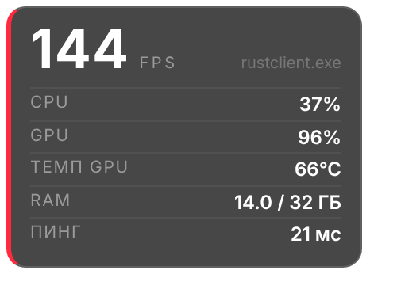

Больше FPS. И ты увидишь, сколько именно.
PULSE — оптимизатор ПК для геймеров: буст в один клик, оверлей с FPS поверх игры и честный отчёт после каждой катки. Всё, что он меняет, откатывается одной кнопкой.
Версия 1.4 · около 75 МБ · без рекламы
ВОЗМОЖНОСТИ
Всё, что нужно перед игрой — в одном окне
Буст в один клик
Схема питания «Максимум», игровой режим, без фоновой записи Xbox, очистка мусора и сброс DNS. Выбираешь, что включить.
Любая игра из Steam
Кнопка «Играть»: буст, закрытие лишних программ, высокий приоритет, «Не беспокоить» — и откат после выхода из игры.
Оверлей с FPS
FPS, загрузка процессора и видеокарты, температура и пинг поверх игры. Включается сочетанием Ctrl+Shift+F.
Отчёт после игры
Средний FPS, 1% low, температуры и пинг за каждую сессию. И сравнение: сколько реально даёт буст именно в твоей игре.
Проверка ПК
Версия микрокода процессора и BIOS, время без перезагрузки и точки восстановления Windows — с понятным объяснением.
Диск и автозагрузка
Что занимает место на диске и что стартует вместе с Windows. PULSE показывает и выключает, но ничего не удаляет сам.
ОТЧЁТЫ
Не верь на слово. Проверь.
Большинство оптимизаторов обещают «+40% FPS» и ничего не доказывают. PULSE сам записывает каждую игру из твоего списка и после выхода показывает отчёт.
Сыграй раз с бустом и раз без — и увидишь реальную разницу на своём компьютере. Если буст не помогает, PULSE так и скажет.
ИГРЫ
Нажал «Играть» — остальное PULSE сделает сам
Добавь любую игру из Steam. Для Rust, Dota 2 и CS2 есть отдельные советы: параметры запуска и чек-лист настроек графики.

БЕЗОПАСНОСТЬ
Честно о том, что PULSE меняет
PULSE не трогает разгон, напряжения, вентиляторы, BIOS и драйверы. Он меняет только настройки Windows — и запоминает, как было до него.
Откат одной кнопкой
Каждое изменение записывается. Раздел «Откат» возвращает всё к исходным значениям.
Точка восстановления
Перед первым бустом PULSE создаёт точку восстановления Windows — страховка даже без самой программы.
Не лезет в игры
Оверлей — отдельное окно поверх игры, а не вставка в неё. Приоритет меняется так же, как в диспетчере задач.
Открытый код
Исходный код открыт на GitHub — любой может проверить, что делает программа: github.com/demsky228/pulse. Файл проверен на VirusTotal.
При первом запуске Windows может написать «Windows защитил ваш компьютер». Так бывает у новых программ без платной цифровой подписи. Нажми «Подробнее» → «Выполнить в любом случае». Программа попросит права администратора — без них не работают настройки питания и очистка.
ЦЕНЫ
Основное — бесплатно навсегда
Pro — разовая покупка, без подписки. Платишь один раз и пользуешься всеми обновлениями.
PULSE
- Буст и откат одной кнопкой
- До 3 игр с кнопкой «Играть»
- Оверлей с FPS
- Отчёты за последние 5 игр
- Проверка ПК, диск, автозагрузка, очистка
PULSE Pro
скоро- Всё из бесплатной версии
- Сколько угодно игр
- Вся история отчётов и сравнение «с бустом и без»
- Отчёт картинкой — поделиться с друзьями
- Темы и цвета интерфейса
- Приоритетная поддержка
ВОПРОСЫ
Частые вопросы
Сколько FPS прибавится?
Зависит от компьютера и игры — где-то заметно, где-то почти ничего. Поэтому в PULSE есть отчёты: сыграй с бустом и без, и программа покажет реальную разницу на твоём ПК.
Могут ли забанить в игре?
PULSE не изменяет файлы игр и не встраивается в них: оверлей — отдельное окно, а приоритет меняется так же, как в диспетчере задач Windows. Но решения античитов мы гарантировать не можем — если игра не даёт сменить приоритет, PULSE просто сообщит об этом.
Это безопасно для компьютера?
PULSE меняет только настройки Windows и всё запоминает. Раздел «Откат» возвращает их, а точка восстановления страхует на крайний случай. Железо — разгон, напряжения, вентиляторы — программа не трогает.
Почему Windows предупреждает при запуске?
У программы пока нет платной цифровой подписи, поэтому Windows не знает издателя. Исходный код открыт на GitHub, а сам файл проверен на VirusTotal.
Какие нужны системы?
Windows 10 или 11 (64-бит). Данные видеокарты сейчас показываются для NVIDIA; для AMD и Intel работает всё остальное.
Попробуй PULSE сегодня
Бесплатно, на русском, без рекламы. Новости и обновления — в Telegram.